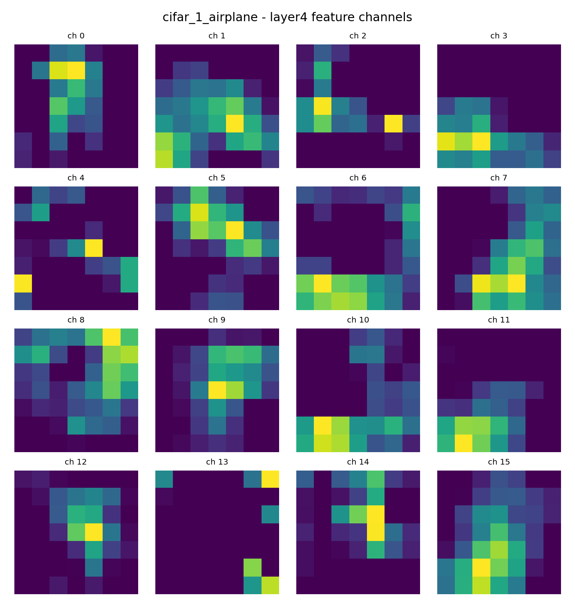

五种模型的已有记录
宏 F10100%
网页实时演示的模型其余模型的已有记录
BERT 的评测集参与了最佳模型选择。这些数字用于回看现有实验，不是独立测试结论；也不构成严格同条件的性能排名。
SELECTED PROJECTS / 2026
从一段新闻到一张特征图。
用两个交互实验，讲清方法、观察结果，
也认真对待每一个尚未解决的问题。

NATURAL LANGUAGE PROCESSING
输入一段中文新闻，观察字符 SVM 的类别判断，以及哪些文本片段为这个判断提供了支持。
文本仅在你的浏览器中处理。示例句子为演示编写，可自由修改。
等待一次新的观察
运行分类后，查看模型的判断依据。贡献来自线性模型的加权项；重叠片段并不等同于独立词语。
去除链接与标签，保留中文、字母和数字。
提取连续 2 至 5 个字符片段，使用子线性词频与 L2 归一化。
使用本机已训练的 80,000 维字符 SVM 权重，计算 15 类决策分数。
模型可能误判跨主题或陌生表达。浏览器演示用于理解模型行为。
COMPUTER VISION
选择输入与网络层，比较 ResNet18 的通道激活和平均热力图。所有图像均来自项目已有输出。
本次保存的运行使用合成图形。它可以展示特征提取流程，不能代表真实 CIFAR-10 性能；平均激活热力图也不是 Grad-CAM 或因果解释。
RESULTS & REFLECTIONS
33,708 条新闻、15 个类别。对照整体分数与分类别表现，寻找下一步更值得验证的问题。
BERT 的评测集参与了最佳模型选择。这些数字用于回看现有实验，不是独立测试结论；也不构成严格同条件的性能排名。
LOOK BEYOND THE AVERAGE
宏 F1 对每类等权平均。对少数类别，需要结合错误样例分析，才能知道模型遗漏了什么。